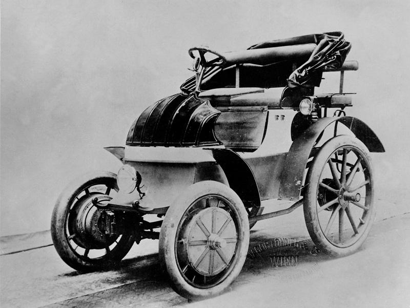
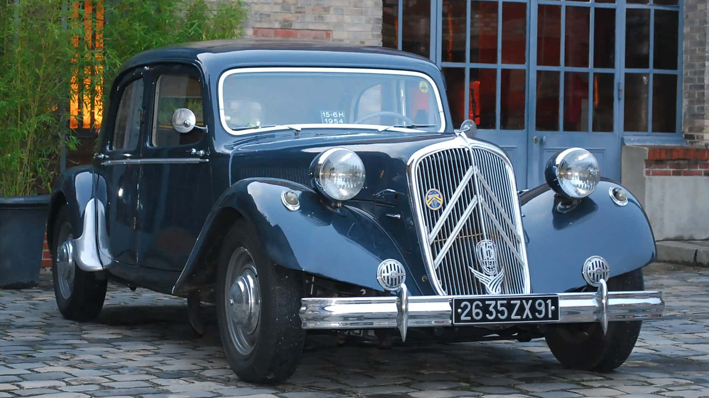
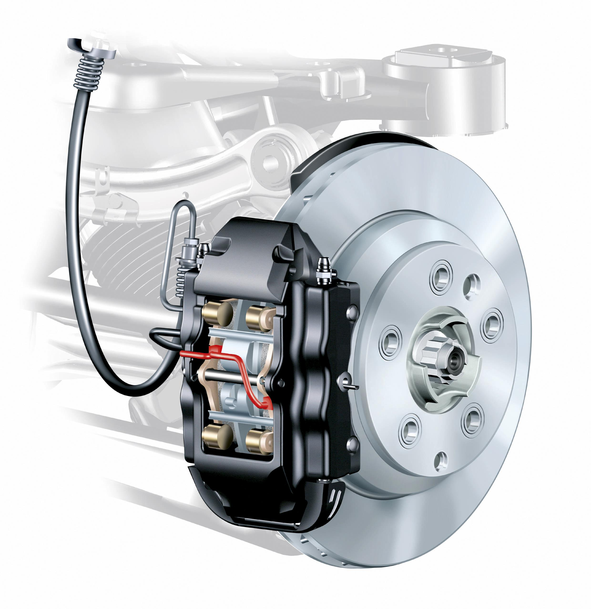
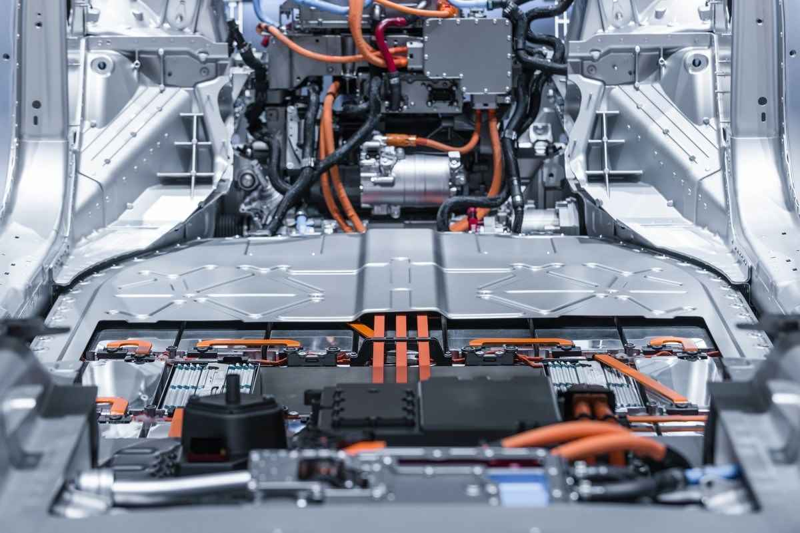

Línea del Tiempo: La Evolución del Automóvil
Análisis técnico-científico exhaustivo de las transformaciones mecánicas, energéticas, industriales, de seguridad y digitales en 257 años de historia automotriz (1769 – 2026)...(Profesora JAvi, aprecie mi trabajo).
El Primer Automóvil a Vapor (Fardier de Cugnot)

Nicolas-Joseph Cugnot diseñó el primer vehículo autopropulsado para el ejército francés, mediante una caldera de vapor de dos cilindros verticales y tres ruedas mecánicas.
Motor de Combustión Interna (Benz Patent-Motorwagen)

Karl Benz patenta el primer automóvil propulsado por un motor de combustión interna a gasolina de cuatro tiempos (Patente DRP 37435). Casi en paralelo, Gottlieb Daimler desarrolla el modelo de cuatro ruedas.
Lohner-Porsche "Semper Vivus": El Primer Híbrido

Ferdinand Porsche, junto al carrocero Ludwig Lohner, presenta en la Exposición Universal de París el primer automóvil híbrido gasolina-eléctrico funcional y pionero de los motores en el cubo de rueda.
Línea de Ensamblaje Móvil (Ford Modelo T)

Henry Ford estandarizó la línea de montaje móvil continua en la planta de Highland Park con el Modelo T, transformando la fabricación artesanal en producción industrial masiva de alta eficiencia.
Chasis Monocasco de Acero (Citroën Traction Avant)

Concebido por André Lefèbvre y Flaminio Bertoni, el Traction Avant inauguró la carrocería autoportante monocasco unibody de chapa de acero soldada y la tracción delantera producida en masa.
Aerodinámica y Motor Bóxer (Volkswagen Escarabajo)

Surge el Volkswagen Tipo 1 (Käfer/Escarabajo), enfocado en un chasis aerodinámico con forma de gota, coeficiente de resistencia bajo y una mecánica simple refrigerada por aire.
Cinturón de Seguridad de 3 Puntos (Nils Bohlin / Volvo)

El ingeniero aeronáutico Nils Bohlin diseñó el cinturón de tres puntos de anclaje para Volvo. La compañía sueca liberó la patente de manera abierta y gratuita para proteger la vida de todos los seres humanos.
Inyección Electrónica EFI y Convertidor Catalítico

Tras el impacto de la crisis petrolera, la industria sustituyó los carburadores mecánicos por sistemas de inyección electrónica (Bosch D-Jetronic / L-Jetronic) y convertidores catalíticos de tres vías.
Frenos Antibloqueo Digitales (Bosch ABS en Mercedes W116)

Bosch y Daimler-Benz desarrollaron y lanzaron al mercado el primer sistema antibloqueo de frenos (ABS) electrónico digital de cuatro canales para vehículos de producción en masa en el Mercedes-Benz Clase S (W116).
Control Electrónico de Estabilidad (Bosch ESP / ESC)

Bosch y Mercedes-Benz introducen en el S 600 Coupé (C140) el Control Electrónico de Estabilidad (ESP/ESC), un cerebro computacional capaz de frenar ruedas selectivamente para evitar trompos y derrapes.
Masificación del Motor Híbrido (Toyota Prius)

Lanzamiento masivo del Toyota Prius (NHW10), combinando un motor térmico de alta eficiencia en ciclo Atkinson con un motor eléctrico síncrono y frenado regenerativo mediante el sistema THS.
Revolución de Baterías de Ion-Litio (Tesla Roadster)

Nace la era moderna del auto 100% eléctrico homologado para autopista con el Tesla Roadster, impulsado por miles de celdas cilíndricas de iones de litio y superando en prestaciones a superdeportivos de combustión.
Telemetría IoT, Radar 77GHz y Sistemas ADAS Nivel 2

Los automóviles integran radares de onda milimétrica de 77 GHz, visión artificial computacional profunda y conexión celular permanente para sistemas avanzados de asistencia a la conducción (ADAS).
Arquitectura Eléctrica de 800V y Cell-to-Pack (Taycan / Blade)

Llegan las plataformas eléctricas de 800 voltios con carga ultrarrápida (Porsche Taycan / E-GMP) e innovaciones estructurales como las baterías Blade y Cell-to-Pack que integran las celdas directamente al chasis.
Vehículos Definidos por Software (SDV) e IA Integrada

Consolidación de los Vehículos Definidos por Software (SDV), supercomputación zonal a bordo (SoC de más de 2.000 TFLOPS), sensores LiDAR de estado sólido, IA multimodal y conducción autónoma conectada a redes inteligentes V2G.